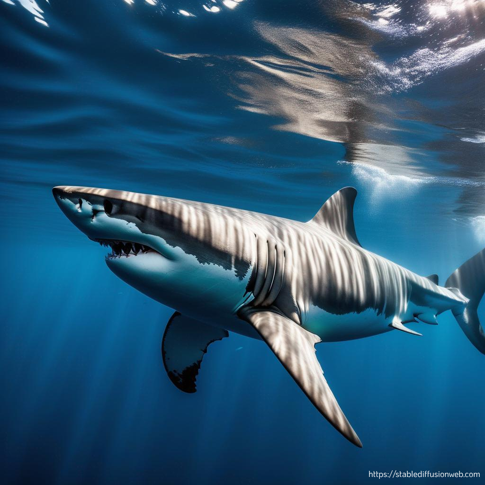

The Unknowns of the "White" Shark

Daftar Pustaka
Abernethy, J. (n.d.). Great white sharks, facts and information. National Geographic. Retrieved November 5, 2023, from https://www.nationalgeographic.com/animals/fish/facts/great-white-shark
Abernethy, J. (n.d.). Great white sharks, facts and information. National Geographic. Retrieved November 5, 2023, from https://www.nationalgeographic.com/animals/fish/facts/great-white-shark
Butherus, S. (2017, January 11). Fun fact: Sharks don't urinate like other fish. Sharkophile. Retrieved November 6, 2023, from https://www.sharkophile.com/2017/01/11/fun-fact-sharks-dont-urinate-like-fish/
Carey, F. G., Kanwisher, J. W., Brazier, O., Gabrielson, G., Casey, J. G., & Jr., H. L. P. (1982, Mei 28). Temperature and Activities of a White Shark, Carcharodon carcharias. Copeia, 1982(2), 254-260. https://doi.org/10.2307/1444603
Dean, B., & Bhushan, B. (2010, October). Shark-Skin Surfaces for Fluid-Drag Reduction in Turbulent Flow: A Review. Philosophical Transactions of the Royal Society A: Mathematical, Physical and Engineering Sciences, 368(1929), 4775-4806. 10.1098/rsta.2010.0201
Fisheries and Oceans Canada. (2016, December 19). Shark anatomy. Retrieved November 5, 2023, from https://www.dfo-mpo.gc.ca/species-especes/sharks/anatomy-eng.html
Great White Sharks | Species. (n.d.). WWF. Retrieved November 5, 2023, from https://www.worldwildlife.org/species/great-white-shark
Hebel, C. (2020, June 19). Diet of Juvenile White Sharks — Shark Research Institute. Shark Research Institute. Retrieved November 5, 2023, from https://www.sharks.org/blog/2020/6/19/diet-of-juvenile-white-sharks
Humas. (2022, April 26). Charcharodon carhcharias si Hiu Putih Besar - MDC Ilmu Kelautan Undip. Marine Diving Club. Retrieved November 5, 2023, from https://mdcundip.com/charcharodon-carhcharias/
Long, D. (n.d.). White shark | Size, Diet, Habitat, Teeth, Attacks, & Facts. Britannica. Retrieved November 5, 2023, from https://www.britannica.com/animal/white-shark
Lukyani, L. (2023, June 17). Apakah Hiu Memiliki Tulang? Kompas.com. Retrieved November 5, 2023, from https://www.kompas.com/sains/read/2023/06/17/200000123/apakah-hiu-memiliki-tulang-
Moro, S., Lasinio, G. J., Block, B., Micheli, F., Leo, G. D., Serena, F., Bottaro, M., Scacco, U., & Ferretti, F. (2019, Desember 27). Abundance and distribution of the white shark in the Mediterranean Sea. FISH and FISHERIES, 1-12. https://doi.org/10.1111/faf.12432
Murch, A., & Smith, L. (n.d.). SHARK REPRODUCTION. Sharks4Kids. Retrieved November 6, 2023, from https://www.sharks4kids.com/shark-reproduction
ocean.si.edu. (n.d.). Biomimicry Shark Denticles | Smithsonian Ocean. Smithsonian Ocean. Retrieved November 5, 2023, from https://ocean.si.edu/ocean-life/sharks-rays/biomimicry-shark-denticles
Partaya, N. S. (2021). Biologi dan Jenis-Jenis Ikan Elasmobranchii di TPI Pantai Utara Jawa Tengah. Lembaga Penelitian dan Pengabdian Masyarakat (LPPM) Universitas Negeri Semarang.
RANDALL, J. E. (1973, July 13). Size of the Great White Shark (Carcharodon). Science, 181(4095), 169-170. 10.1126/science.181.4095.169
| No |
AI Helper |
Visualisasi |
| 1 |
Chat GPT
|
 |
| 2 |
Perplexity AI
|
|
| 3 |
Ask Codi
|
|
| 4 |
Stable Difussion
|
|
| 5 |
Quill Bot
|
|